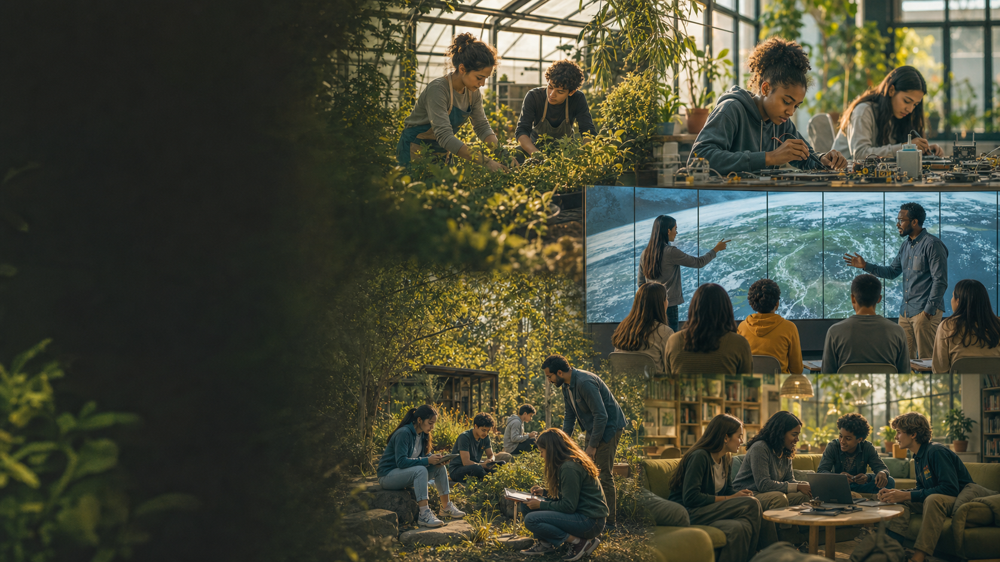

Surveillance as solution
Replacing relationships with automated enforcement — "Living Ledgers" that punish behavior in real time.

From the futures you imagined to one small thing we can build today.
The prompt sent out to the group, asking them to design a future in which today's friction simply doesn't exist anymore.
Do not simply optimize or improve the existing system.
Design the system so the original problem no longer exists.
Students don't argue with the system any more than they argue with gravity.
"A unified social and academic ecosystem that spans a student's entire life — home, school, and community. The walls of 'school' have effectively been dissolved into the community."
If a student couldn't learn in a room, the room was broken, not the student.
"Every dollar previously spent on standardized testing, redirected into Biometric Responsive Environments. The burden of performance shifts from the child's brain to the architect's design."
Leo doesn't have "Math" at 10:00. He has a Mastery Target: applying fluid dynamics to urban hydroponics.
"When Leo hits a conceptual wall the AI identifies as socially critical, it pings a human Lead Mentor. We stopped measuring time and started measuring demonstrated agency."
The aquaponics unit isn't a teaching tool. It is the classroom's lungs and lighting.
"Biology is 'always on.' Assessment dissolved into Continuous Mastery Tracking — Action-to-Insight evidence captured as students adjust flow rates and identify fungal growth."
The prompt made their answers pretty narrow. The AI sort of lasered in and wasn't very realistic.
Facilitator, reviewing the responses
Replacing relationships with automated enforcement — "Living Ledgers" that punish behavior in real time.
Radical laws that ignore political and social complexity. Years of lobbying. Not a teacher's lever.
"Dissolving" dyslexia, workload, or motivation overnight. Skips the hard human part.
Legally dissolving the 180-day, 6-hour seat-time requirement. A federal lift.
Banning teachers from performing any task that could be automated. Union and policy turf.
A shared "Success Ledger" between parents, students, and admins. Years of buy-in.
None of these are within the power of an individual teacher. We need actions that are bold and scalable — and within their power to do.
Facilitator · the pivot point
Dedicate 20% of the week to student-owned projects. The teacher becomes a "consultant on retainer," engaging only when pinged.
Unilaterally replace points as currency with evidence of impact. A shared dashboard. Proof unlocks privileges.
Stop asking permission for field trips. Invite the world in. Local experts become "mastery validators."

We'll vibe code one small artifact side by side. Then I'll show how it could turn into a real app. Then you'll go build the thing you've been wishing existed.
Then let the evidence change the conversation.